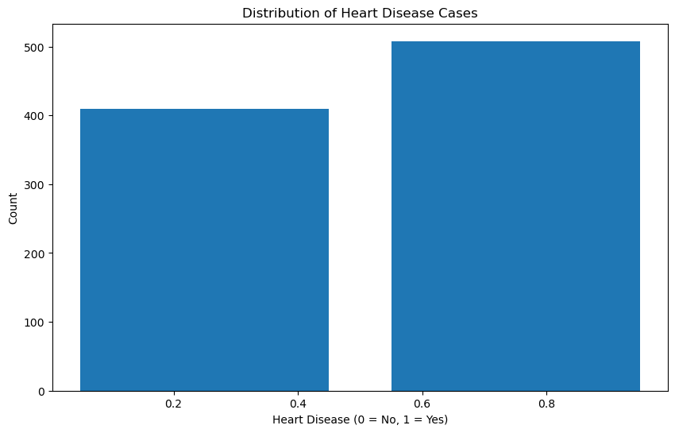
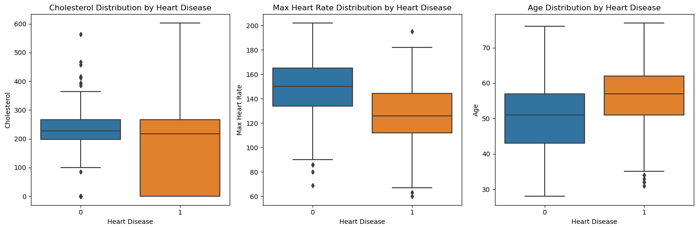

From Black Box to Glass House - EBMs and the Art of Transparent Machine Learning
In this blog post, we learn about the fundamentals of Explainable Boosting Machines.
Author
Mehul Jain
Published
January 31, 2025
Imagine you’re a doctor trying to predict a patient’s risk of heart disease. Traditional machine learning models might give you accurate predictions, but they often act as “black boxes” - making it difficult to understand why they made certain predictions. This is where Explainable Boosting Machines (EBMs) shine.
In this blog post, we’ll dive deep into EBMs through a hands-on tutorial. We’ll explore how they work, implement them in code, and most importantly, see how they can help us extract meaningful insights from data. Whether you’re a data scientist, researcher, or practitioner, you’ll learn how EBMs can transform your approach to machine learning from a black box into a glass box.
Introduction:
Consider this scenario: An EBM model analyzing patient data reveals that blood pressure between 120-140 mmHg, combined with moderate exercise (3-4 times per week), significantly reduces heart disease risk. This isn’t just a prediction - it’s actionable medical knowledge that doctors can use to make informed decisions about patient care.
For years, the machine learning community has operated under the assumption that we must choose between model accuracy and interpretability. Want a highly accurate model? You might need to settle for a complex, opaque neural network. Need to explain your model’s decisions? You might have to compromise on performance with simpler models like decision trees.
EBMs challenge this conventional wisdom. They offer the best of both worlds - the accuracy of modern machine learning techniques with the transparency of simpler models. Through their unique architecture, EBMs achieve state-of-the-art performance while maintaining complete interpretability of every feature’s contribution to the final prediction.
How do EBMs work?
What makes EBMs special is their unique combination of interpretability and modern machine learning power. At their core, EBMs work by learning how each individual feature affects the prediction, one at a time. Here’s a deeper look at how they work:
Feature Functions: For each feature X, EBM learns a function f(X) that captures that feature’s contribution to the prediction. These functions are flexible and can model complex non-linear relationships.
Cyclic Training: The model cycles through features repeatedly:
For each feature, it fits a small number of trees (usually 1-4)
These trees learn the residual error not captured by other features
The process repeats until convergence
Additive Structure: The final prediction is the sum of all feature functions: prediction = intercept + f1(X1) + f2(X2) + ... + fn(Xn)
Regularization: EBMs use techniques like early stopping and small learning rates to prevent overfitting while maintaining interpretability.
This architecture allows EBMs to achieve accuracy comparable to random forests or gradient boosting machines, while keeping every component transparent and interpretable. You can examine exactly how each feature contributes, identify potential biases, and explain predictions to stakeholders.
import pandas as pdimport numpy as npimport matplotlib.pyplot as pltimport seaborn as snsimport kagglehubfrom sklearn.feature_selection import mutual_info_classif%matplotlib inline
Bad key text.latex.preview in file /Users/mehuljain/miniconda3/envs/aaamlp/lib/python3.10/site-packages/matplotlib/mpl-data/stylelib/_classic_test.mplstyle, line 123 ('text.latex.preview : False')
You probably need to get an updated matplotlibrc file from
https://github.com/matplotlib/matplotlib/blob/v3.7.1/matplotlibrc.template
or from the matplotlib source distribution
Bad key mathtext.fallback_to_cm in file /Users/mehuljain/miniconda3/envs/aaamlp/lib/python3.10/site-packages/matplotlib/mpl-data/stylelib/_classic_test.mplstyle, line 155 ('mathtext.fallback_to_cm : True # When True, use symbols from the Computer Modern')
You probably need to get an updated matplotlibrc file from
https://github.com/matplotlib/matplotlib/blob/v3.7.1/matplotlibrc.template
or from the matplotlib source distribution
Bad key savefig.jpeg_quality in file /Users/mehuljain/miniconda3/envs/aaamlp/lib/python3.10/site-packages/matplotlib/mpl-data/stylelib/_classic_test.mplstyle, line 418 ('savefig.jpeg_quality: 95 # when a jpeg is saved, the default quality parameter.')
You probably need to get an updated matplotlibrc file from
https://github.com/matplotlib/matplotlib/blob/v3.7.1/matplotlibrc.template
or from the matplotlib source distribution
Bad key keymap.all_axes in file /Users/mehuljain/miniconda3/envs/aaamlp/lib/python3.10/site-packages/matplotlib/mpl-data/stylelib/_classic_test.mplstyle, line 466 ('keymap.all_axes : a # enable all axes')
You probably need to get an updated matplotlibrc file from
https://github.com/matplotlib/matplotlib/blob/v3.7.1/matplotlibrc.template
or from the matplotlib source distribution
Bad key animation.avconv_path in file /Users/mehuljain/miniconda3/envs/aaamlp/lib/python3.10/site-packages/matplotlib/mpl-data/stylelib/_classic_test.mplstyle, line 477 ('animation.avconv_path: avconv # Path to avconv binary. Without full path')
You probably need to get an updated matplotlibrc file from
https://github.com/matplotlib/matplotlib/blob/v3.7.1/matplotlibrc.template
or from the matplotlib source distribution
Bad key animation.avconv_args in file /Users/mehuljain/miniconda3/envs/aaamlp/lib/python3.10/site-packages/matplotlib/mpl-data/stylelib/_classic_test.mplstyle, line 479 ('animation.avconv_args: # Additional arguments to pass to avconv')
You probably need to get an updated matplotlibrc file from
https://github.com/matplotlib/matplotlib/blob/v3.7.1/matplotlibrc.template
or from the matplotlib source distribution
Downloading the dataset:
For this tutorial, we’ll be using the Heart Failure Prediction dataset from Kaggle. To download it, you’ll need a Kaggle account and API credentials. Here’s how to set it up:
Create a Kaggle account at kaggle.com if you don’t have one
Go to your account settings (click on your profile picture → Account)
Scroll down to “API” section and click “Create New API Token”
This will download a kaggle.json file - place it in ~/.kaggle/ on Linux/Mac or C:\Users\<Windows-username>\.kaggle\ on Windows.
Once set up, you can download the dataset using the Kaggle API. We’ll show the code for this in the next cell.
# Download latest versionpath = kagglehub.dataset_download("fedesoriano/heart-failure-prediction")print("Path to dataset files:", path)
Path to dataset files: /Users/mehuljain/.cache/kagglehub/datasets/fedesoriano/heart-failure-prediction/versions/1
Let’s load the dataset:
df= pd.read_csv(path +"/heart.csv")df.head()
Age
Sex
ChestPainType
RestingBP
Cholesterol
FastingBS
RestingECG
MaxHR
ExerciseAngina
Oldpeak
ST_Slope
HeartDisease
0
40
M
ATA
140
289
0
Normal
172
N
0.0
Up
0
1
49
F
NAP
160
180
0
Normal
156
N
1.0
Flat
1
2
37
M
ATA
130
283
0
ST
98
N
0.0
Up
0
3
48
F
ASY
138
214
0
Normal
108
Y
1.5
Flat
1
4
54
M
NAP
150
195
0
Normal
122
N
0.0
Up
0
The dataset contains various medical features that can be used to predict heart disease:
Age: Age of the patient in years
Sex: Gender of the patient (M/F)
ChestPainType: Type of chest pain (ATA: Atypical Angina, NAP: Non-Anginal Pain, ASY: Asymptomatic, TA: Typical Angina)
Using these features, we’ll train an Explainable Boosting Machine (EBM) to predict whether a patient is likely to have heart failure. EBMs are particularly useful in healthcare applications because they provide interpretable predictions while maintaining high accuracy, allowing us to understand which factors contribute most to the prediction.
Exploratory Data Analysis:
Let’s start by exploring the dataset with some basic visualizations and statistics.
# Check for missing valuesmissing_values = df.isnull().sum()
# Check for class imbalanceclass_counts = df['HeartDisease'].value_counts()# Visualize class distributionplt.figure(figsize=(10, 6))plt.hist(df['HeartDisease'], bins=2, rwidth=0.8)plt.title('Distribution of Heart Disease Cases')plt.xlabel('Heart Disease (0 = No, 1 = Yes)')plt.ylabel('Count')plt.show()

Looking at the class distribution, we can see that the dataset is relatively balanced between patients with and without heart disease. This is good news for our modeling efforts, as we won’t need to employ any special techniques to handle class imbalance. The roughly equal distribution also means our model will have sufficient examples of both positive and negative cases to learn from, which should help in achieving good predictive performance for both classes.
Next, we’ll analyze the mutual information between our features and the target variable. Mutual information (MI) is a measure from information theory that quantifies the mutual dependence between two variables - specifically, it measures how much information one variable provides about another.
When used in feature analysis, MI helps us understand: 1. The strength of the relationship between each feature and the target variable (HeartDisease) 2. The amount of uncertainty about the target that is reduced by knowing a feature 3. Non-linear relationships that might not be captured by simpler correlation metrics
Unlike correlation coefficients, mutual information: - Can detect non-linear relationships - Is always non-negative (0 indicates no mutual information, higher values indicate stronger relationships) - Doesn’t assume any particular distribution of the variables
X = df.copy()y = X.pop("HeartDisease")# Label encoding for categoricalsfor colname in X.select_dtypes("object"): X[colname], _ = X[colname].factorize()discrete_features = X.dtypes ==int
def make_mi_scores(X, y, discrete_features): mi_scores = mutual_info_classif(X, y, discrete_features=discrete_features) mi_scores = pd.Series(mi_scores, name="MI Scores", index=X.columns) mi_scores = mi_scores.sort_values(ascending=False)return mi_scoresmi_scores = make_mi_scores(X, y, discrete_features)mi_scores[::3]
Cholesterol 0.223062
ChestPainType 0.155988
Age 0.073583
FastingBS 0.038040
Name: MI Scores, dtype: float64
Cholesterol 0.223062
ST_Slope 0.207474
MaxHR 0.161544
ChestPainType 0.155988
ExerciseAngina 0.131680
Oldpeak 0.114810
Age 0.073583
RestingBP 0.062498
Sex 0.047477
FastingBS 0.038040
RestingECG 0.006045
Name: MI Scores, dtype: float64
The mutual information scores reveal several interesting insights about our heart disease dataset:
Cholesterol has the highest MI score (0.22), indicating it has the strongest relationship with heart disease
ST_Slope is the second most informative feature (0.20), suggesting different types of slope at peak exercise ST segment are important predictors.
Age has a moderate relationship (0.07) with heart disease outcomes.
FastingBS (blood sugar) shows a weaker but still notable relationship (0.04).
This suggests that cholesterol levels, ST_Slope, maximum heart rate achieved during exercise and chest pain characteristics should be key features to focus on in our model. The relatively lower scores for age and blood sugar indicate they may be less predictive, though still potentially useful.
Can we look at some scatter plots to confirm the relationship between the features and the target variable?
# Create box plots to better show the relationship between features and heart diseaseplt.figure(figsize=(15, 5))# Plot Cholesterol distribution by Heart Diseaseplt.subplot(131)sns.boxplot(x='HeartDisease', y='Cholesterol', data=pd.concat([X, y], axis=1))plt.xlabel('Heart Disease')plt.ylabel('Cholesterol')plt.title('Cholesterol Distribution by Heart Disease')# Plot MaxHR distribution by Heart Diseaseplt.subplot(132)sns.boxplot(x='HeartDisease', y='MaxHR', data=pd.concat([X, y], axis=1))plt.xlabel('Heart Disease')plt.ylabel('Max Heart Rate')plt.title('Max Heart Rate Distribution by Heart Disease')# Plot Age distribution by Heart Diseaseplt.subplot(133)sns.boxplot(x='HeartDisease', y='Age', data=pd.concat([X, y], axis=1))plt.xlabel('Heart Disease')plt.ylabel('Age')plt.title('Age Distribution by Heart Disease')plt.tight_layout()

These visualizations support the mutual information scores we saw earlier, particularly for cholesterol and max heart rate being important predictors.
Note: The significant overlap in the cholesterol boxplots between those with and without heart disease is noteworthy. This overlap could be explained by several factors: 1. Treatment Effect: Many patients may already be on cholesterol-lowering medications (like statins), which could artificially lower their cholesterol levels despite having heart disease. This medical intervention likely creates a broader range and more overlap between the groups. 2. Complex Relationship: While high cholesterol is a risk factor for heart disease, the relationship isn’t perfectly linear - other factors like HDL vs LDL ratios, genetics, and lifestyle factors all play important roles. 3. Temporal Aspect: The cholesterol measurements represent a snapshot in time and may not reflect the historical cholesterol levels that contributed to heart disease development.
This overlap emphasizes why we need to consider multiple features together rather than relying on any single measurement for heart disease prediction.
Data Preprocessing:
Explainable Boosting Machines (EBMs) handle preprocessing internally in an intelligent way:
Categorical features are automatically one-hot encoded
Continuous features are binned intelligently during training
Missing values are handled automatically
Feature scaling is not required since EBMs learn optimal feature transformations
This means we can use our raw data directly without extensive preprocessing, which is one of the advantages of using EBMs. The model will learn the appropriate transformations for each feature during training while maintaining interpretability.
/Users/mehuljain/miniconda3/envs/aaamlp/lib/python3.10/site-packages/pandas/core/arrays/masked.py:60: UserWarning: Pandas requires version '1.3.6' or newer of 'bottleneck' (version '1.3.5' currently installed).
from pandas.core import (
/Users/mehuljain/miniconda3/envs/aaamlp/lib/python3.10/site-packages/pandas/core/arrays/masked.py:60: UserWarning: Pandas requires version '1.3.6' or newer of 'bottleneck' (version '1.3.5' currently installed).
from pandas.core import (
/Users/mehuljain/miniconda3/envs/aaamlp/lib/python3.10/site-packages/pandas/core/arrays/masked.py:60: UserWarning: Pandas requires version '1.3.6' or newer of 'bottleneck' (version '1.3.5' currently installed).
from pandas.core import (
/Users/mehuljain/miniconda3/envs/aaamlp/lib/python3.10/site-packages/pandas/core/arrays/masked.py:60: UserWarning: Pandas requires version '1.3.6' or newer of 'bottleneck' (version '1.3.5' currently installed).
from pandas.core import (
/Users/mehuljain/miniconda3/envs/aaamlp/lib/python3.10/site-packages/pandas/core/arrays/masked.py:60: UserWarning: Pandas requires version '1.3.6' or newer of 'bottleneck' (version '1.3.5' currently installed).
from pandas.core import (
/Users/mehuljain/miniconda3/envs/aaamlp/lib/python3.10/site-packages/pandas/core/arrays/masked.py:60: UserWarning: Pandas requires version '1.3.6' or newer of 'bottleneck' (version '1.3.5' currently installed).
from pandas.core import (
/Users/mehuljain/miniconda3/envs/aaamlp/lib/python3.10/site-packages/pandas/core/arrays/masked.py:60: UserWarning: Pandas requires version '1.3.6' or newer of 'bottleneck' (version '1.3.5' currently installed).
from pandas.core import (
/Users/mehuljain/miniconda3/envs/aaamlp/lib/python3.10/site-packages/pandas/core/arrays/masked.py:60: UserWarning: Pandas requires version '1.3.6' or newer of 'bottleneck' (version '1.3.5' currently installed).
from pandas.core import (
AUC: 0.931
This blog post is a work in progress. I will update it with the code for the rest of the tutorial soon. 🚧